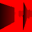

GPU Driven Occlusion Culling
https://interplayoflight.wordpress.com/2018/05/25/gpu-driven-rendering-experiments-at-the-digital-dragons-conference/ 18年这个course的一些notes和thoughts
main thoughts
- using a compute shader to perform the occlusion tests producing a list of visible props
- consuming on the GPU to avoid rendering occluded objects
- using instance rendering to render the props
steps
Occlusion buffer
- render the depth of all main occluders to the occlusion buffer
- without pixel shader

Hierarchical-Z mip chain
- create a Hierarchical-Z mip chain of the occlusion buffer, using the max operator to produce each mip level
using a compute shader to do the downsampling
void downscale(uint3 threadID : SV_DispatchThreadID) { if (all(threadID.xy < RTSize.xy)) { float4 depths = inputRT.Gather(samplerPoint, (threadID.xy + 0.5)/ RTSize.xy); //find and return max depth outputRT[threadID.xy] = max(max(depths.x, depths.y), max(depths.z, depths.w)); } }gather 不支持 mip level 参数, 且只有shader model 5支持，还是用4 texture reads


{kind=link}
{kind=link}
{kind=link}
Prop visibility calculation
packed data for instances of props in a Structured buffer
- world transformation
- axis aligned bounding box
choose whether perform frustum culling
compute shader to calculate visibilities
根据物体的boundingbox投影到clip space的面积大小，决定采样那一个mip level，将bdbox的八个corner的最小深度和采样得到的最大深度对比，如果最小深度>采样深度，则物体被遮挡。
for (int i = 0; i < 8; i++) { //transform World space aaBox to NDC float4 clipPos = mul(float4(boxCorners[i], 1), ViewProjection); clipPos.z = max(clipPos.z, 0); clipPos.xyz = clipPos.xyz / clipPos.w; clipPos.xy = clamp(clipPos.xy, -1, 1); clipPos.xy = clipPos.xy * float2(0.5, -0.5) + float2(0.5, 0.5); minXY = min(clipPos.xy, minXY); maxXY = max(clipPos.xy, maxXY); minZ = saturate(min(minZ, clipPos.z)); } if (all(maxXY > 0) && all(minXY < 1) ) // 做了一次frustum culling { float4 boxUVs = float4(minXY, maxXY); // Calculate hi-Z buffer mip int2 size = (maxXY - minXY) * RTSize.xy; if (alwaysVisible || (maxXY - minXY).y >= 0.001 ) { float mip = ceil(log2(max(size.x, size.y))); // 这里是计算mip level的地方 mip = clamp(mip, 0, MaxMipLevel); // Texel footprint for the lower (finer-grained) level float level_lower = max(mip - 1, 0); float2 scale = exp2(-level_lower); float2 a = floor(boxUVs.xy*scale); float2 b = ceil(boxUVs.zw*scale); float2 dims = b - a; // Use the lower level if we only touch <= 2 texels in both dimensions if (dims.x <= 2 && dims.y <= 2) mip = level_lower; //load depths from high z buffer float4 depth = { inputRT.SampleLevel(samplerPoint, boxUVs.xy, mip), inputRT.SampleLevel(samplerPoint, boxUVs.zy, mip), inputRT.SampleLevel(samplerPoint, boxUVs.xw, mip), inputRT.SampleLevel(samplerPoint, boxUVs.zw, mip) }; //find the max depth float maxDepth = max(max(depth.x, depth.y), max(depth.z, depth.w)); if (alwaysVisible || ActivateCulling == 0 || minZ <= maxDepth) { predicate = true; //increase instance count for this particular prop type InterlockedAdd(drawcallDataOut[ instanceDataIn[threadID.x].DrawcallID * 5 + 1], 1); } } }
stream compaction
- save prop visibility result as bool
instanceFlagsData[threadID.x] = predicate;

parallel prefix scan
 如果第i个instance可见(input[i] > 0), 把这个instance的数据拷贝给压缩结果的第Output[i]个data.
如果第i个instance可见(input[i] > 0), 把这个instance的数据拷贝给压缩结果的第Output[i]个data.stream compaction
-
//perform reduction for (d = NoofDrawcalls >> 1; d > 0; d >>= 1) { GroupMemoryBarrierWithGroupSync(); if (tID < d) { int ai = offset * (2 * tID + 1) - 1; int bi = offset * (2 * tID + 2) - 1; temp[bi] += temp[ai]; } offset *= 2; } 再每次将序列一分为二，对比最后两个数值
 以上计算可以用compute shader 并行计算，每一层需要做一次同步
以上计算可以用compute shader 并行计算，每一层需要做一次同步//perform downsweep and build scan for (d = 1; d < NoofDrawcalls; d *= 2) { offset >>= 1; GroupMemoryBarrierWithGroupSync(); if (tID < d) { int ai = offset * (2 * tID + 1) - 1; int bi = offset * (2 * tID + 2) - 1; int t = temp[ai]; temp[ai] = temp[bi]; temp[bi] += t; } }为啥最多2048个数据呢，因为一个线程组最多1024个线程，每个线程计算2个数的和，最多可以计算2048个数据。
超过2048个数据怎么办
每2048个数据使用一个compute shader thread group计算组内的累加和，然和把最大的和记到另外的数组里，之后再用一个pass, 对每个group里的数据分别加上之前所有组的最大的和

-
{kind=link}
{kind=link}
MultiDrawInstancedIndirect
- DX12 直接支持
void ExecuteIndirect( ID3D12CommandSignature *pCommandSignature, UINT MaxCommandCount, ID3D12Resource *pArgumentBuffer, UINT64 ArgumentBufferOffset, ID3D12Resource *pCountBuffer, UINT64 CountBufferOffset ); - DX11 使用NVIDIA 或者 AMD 的 driver extension
nv 和 amd 还是需要把vertex 数据拍到一起
- nvapi
NvAPI_D3D11_MultiDrawIndexedInstancedIndirect( d3dImmediateContext, drawCount, //drawCount, renderingContext.m_instanceArgsBuffer->GetBuffer(), 0, //alignedByteOffsetForArgs 5 * sizeof(UINT) //alignedByteStrideForArgs );
- nvapi
- DX11 除了 NVIDIA 和 AMD，使用函数封装多个DrawIndexedInstancedIndirect 或者 把所有物体生成相同顶点数的cluster，再调用DrawIndexedInstancedIndirect
for (UINT i = 0; i < drawCount; i++) { d3dImmediateContext->DrawIndexedInstancedIndirect( argumentsBuffer, i * 5 * sizeof(UINT) ); }
{kind=link}
{kind=link}
{kind=link}
batching
mesh LOD

mesh cluster
这里看了一个unity的demo里的实现，是将一个object的bounding box分成多个voxel，即一个个小的立方体，然后把所有vertex根据位置对应到不同的voxel. 然后再开始分配cluster，eg. 一个cluster 255个顶点，对于一个voxel，如果>=255个顶点，把前255个顶点分配给一个cluster，如果<255，则将所有顶点先分配给这个cluster，然后再搜索周围步长是1的voxel里的顶点来填，如果还不满，再搜步长是2的voxel. 这样的想法是尽量把位置相近的顶点分配到一个cluster里。但是感觉有点过于复杂，是不是通过一些八叉树的空间关系可以更快的遍历。
int loopStart = min(currentVoxel.count, max(lastedVertex - currentVoxel.count, 0));
for (int j = 0; j < loopStart; j++)
{
Triangle* tri = currentVoxel.Pop();
currentPoints.Add(tri->a);
currentPoints.Add(tri->b);
currentPoints.Add(tri->c);
}
lastedVertex -= loopStart;
for (int size = 1; lastedVertex > 0; size++)
{
int3 leftDown = max(voxelCoord - size, 0);
int3 rightUp = min(voxelSize, voxelCoord + size);
for (int x = leftDown.x; x < rightUp.x; ++x)
for (int y = leftDown.y; y < rightUp.y; ++y)
for (int z = leftDown.z; z < rightUp.z; ++z)
{
ref Voxel vxl = ref voxels[x, y, z];
int vxlCount = vxl.count;
for (int j = 0; j < vxlCount; ++j)
{
voxelCoord = int3(x, y, z);
Triangle* tri = vxl.Pop();
currentPoints.Add(tri->a);
currentPoints.Add(tri->b);
currentPoints.Add(tri->c);
lastedVertex--;
if (lastedVertex <= 0) goto CONTINUE;
}
}
}
CONTINUE:
material
single constant buffer
shader 里 PerObjectData数组，size=2，可支持动态大小
texture
- texture array
- bindless texture
- virtual texture
最后附上一个针对每一步输入输出整理的XMind
GPU driven rendering.png